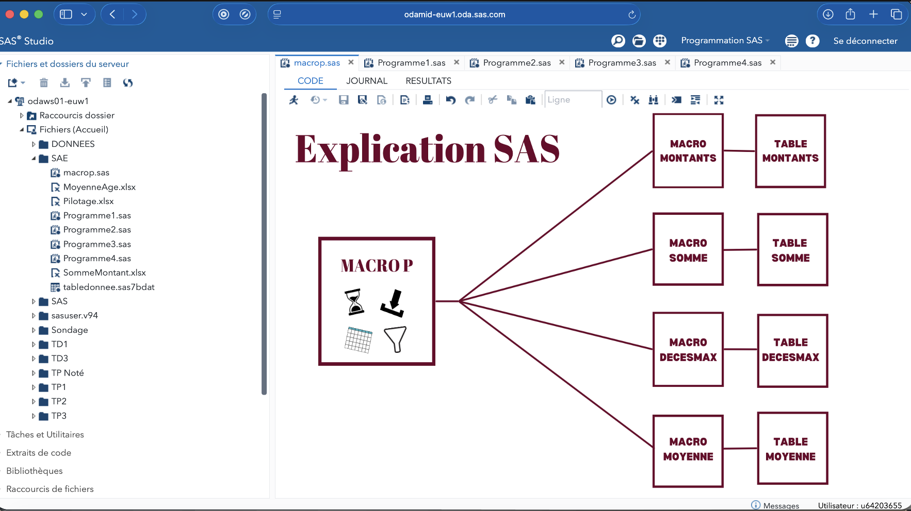

Automatisation SAS & Pilotage Excel
Conception d'une chaîne de traitement de données modulaire, entièrement pilotée par des paramètres externes.

Contexte
Ce projet visait à industrialiser un processus de traitement de données complexe. L'enjeu principal était de sortir de la logique "codée en dur" pour créer une application SAS flexible. J'ai conçu une architecture où l'utilisateur contrôle l'exécution via un fichier Excel (Pilotage.xlsx), sans jamais avoir besoin de modifier le code source SAS.
Fonctionnalités
- Pilotage externe : Contrôle des paramètres (dates, périmètres, options) via un fichier Excel importé dynamiquement.
- Structure modulaire : Découpage du traitement en étapes logiques (Programme1 à Programme4) pour faciliter la maintenance.
- Bibliothèque de Macros : Utilisation d'un fichier dédié (macrop.sas) centralisant les fonctions réutilisables.
- Automatisation : Exécution en chaîne des programmes sans intervention manuelle.
Technologies
- SAS Base & SAS Macro (avancé)
- Excel (pour l'interface de pilotage)
- Procédure d'import/export
Ce que j'ai appris
Ce projet m'a permis de maîtriser la programmation dynamique sous SAS. J'ai appris à concevoir des outils robustes et conviviaux, capables d'être utilisés par des personnes ne connaissant pas le langage SAS.